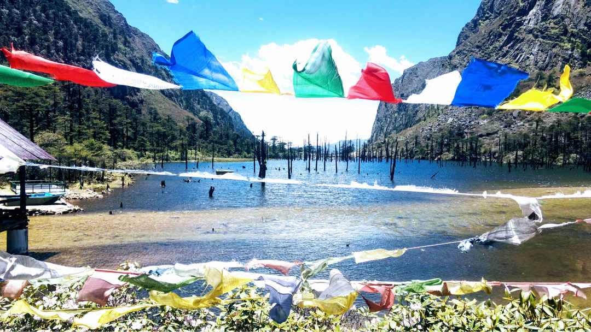
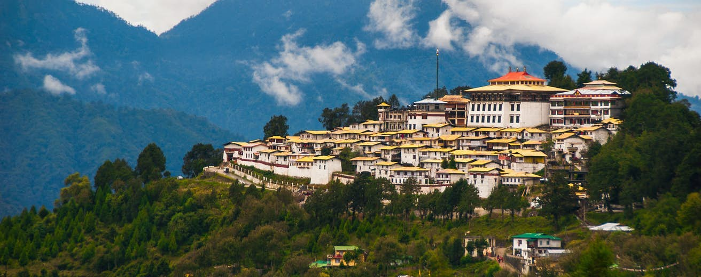
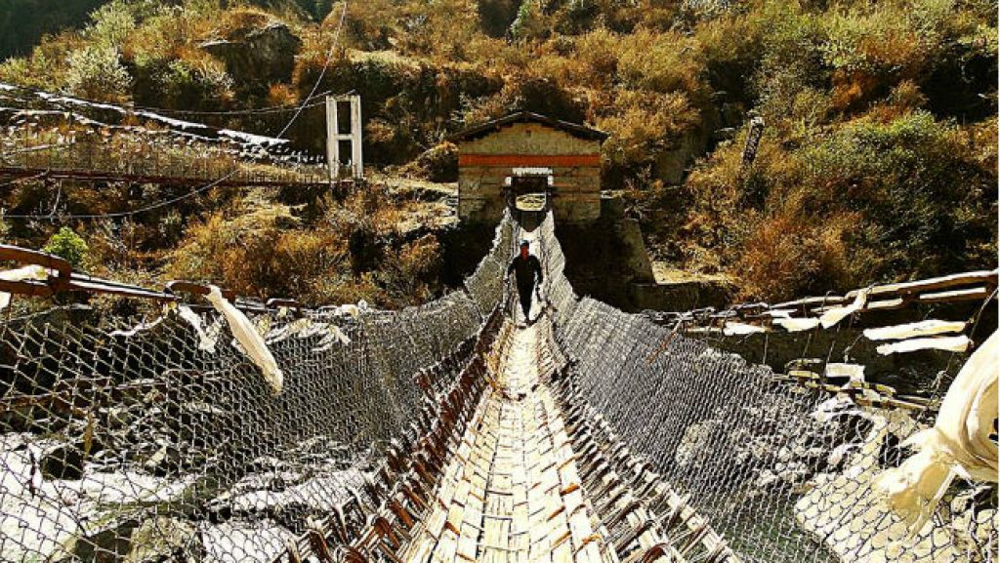

A trip to Tawang valley is every traveller’s dream.
Surrounded by snow-capped mountains, conifers covered in snowflakes, dense forests, valleys, crystal clear rivers
and frozen lakes, it is a perfect winter retreat for those who love the mountains.
How to reach there?
A serene and picturesque town situated at a height of 3500 metres, Tawang lies in the remote corner of Arunachal Pradesh.
Rangapara Railway Station (in Tezpur) located 383kms from Tawang is the nearest railway station.
And among airways, Salonibari Airport (in Tezpur) located at a distance of 387kms and the Lokpriya Gopinath Bordoloi
International Airport (in Guwahati) at a distance of 480kms are the nearest airports.
Top things to do?
Captivating everyone with its serene natural beauty and spiritual ambience, places to visit in Tawang are on every traveller’s bucket list. Renowned as the birthplace of Dalai Lama,
Tawang boasts of many amazing monasteries and adventure places.
Keeping the tourists enticed with its thrilling getaways, tourist places in Tawang are a great delight whether you are going with friends or family.
There are a number of waterfalls, monasteries and snow-clad peaks to leave you spellbound when you are travelling in Tawang.
Offering a perfect blend of culture, nature and alluring places, Tawang is a wonderful tourist destination to enjoy a holiday of a lifetime.


